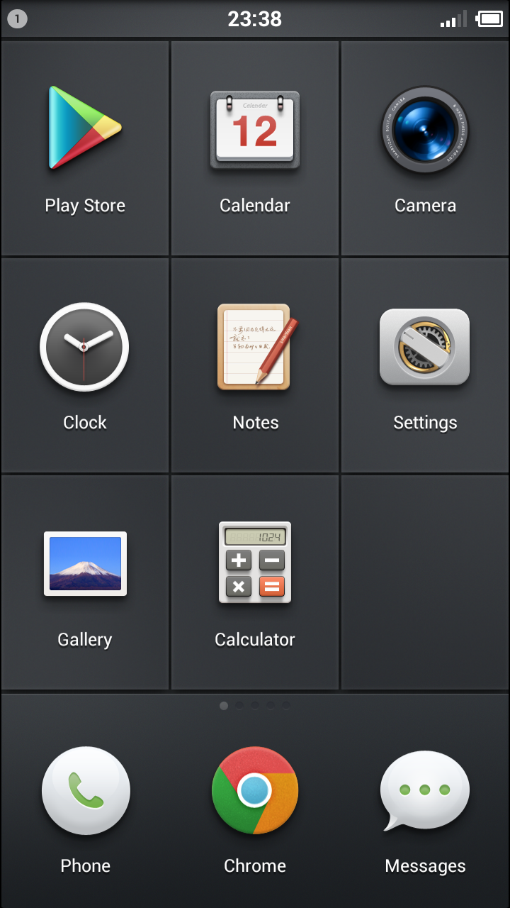

Smartisan OS，你不知道的细节（V0.5.0 alpha）
10,nov,20132013.10.14，给MI2刷入了传说中的Smartisan OS V0.4.0 alpha。Smartisan OS在V0.2.0的版本就支持了OTA升级，第二天顺利升到了V0.5.0 alpha。我不知道对于一款Rom来说OTA的技术难度如何，但是能够以如此便捷的方式亲身体验一款明星Rom的发布和迅速更新，还是一件很幸福的事情。
锤子科技官网：http://www.smartisan.cn

此文旨在描述我在使用Smartisan OS的过程中，感受到的此Rom的一些不为人知的细节，老罗发布会上提过的那些这里都不再提了。
一，替换官方Recovery，新Recovery可以实现“Choose zip from sdcard”。
刷入锤子系统要使用新的Recovery替换掉小米官方Recovery，正好帮我解决了想要换掉Recovery的需求，小米官方Recovery没有“Choose zip from sdcard”功能，之前刷系统时要刷入Google Services用官方Recovery就无法实现。
二，自带Google Services（谷歌服务）。
刷入细节不再赘述，成功刷入并启动Smartisan OS，开始一些最基本的设置。这时我发现了锤子系统第一个触动我的细节－－自带Google Services（谷歌服务），谷歌服务的问题是我在我为数不多的刷机经历中最头疼的一件事情，每次总要遇到点问题搞的很麻烦。不管锤子帮的男人们是出于什么原因这么做，这确实是非常高端大气并且Thoughtful的一点，我相信这是有意为之，而不是在系统功能不完善的初期的权宜之计。自带谷歌服务的好处就是，谁用谁知道。
三，搜狗输入法锤子版，更符合汉字输入用户使用习惯的英文键盘。
锤子系统定制过的搜狗输入法，大小写切换键只需要一次点击就可以保持生效。我用过见过的包括IOS键盘、Google输入法在内的所有键盘，这是我第一次见到这样的设定并且深以为非常非常的舒服。包括IOS键盘在内的所有键盘切换大写时都需要双击才能保持生效（单击只能输入一个大写字母并且“智能”地变回小写），这是我使用所有键盘时觉得最令人难受的设定－－是真真实实的感觉非常不情愿去双击那个按键，双击时候的感觉非常的awful。
IOS键盘对大小写切换按钮的具体设定是这样的（只以英文输入为例）：在输入范围为空的时候，自动切换为大写；输入一个字母后切换回小写；在一个“.”加一个空格之后自动切换为大写。对于一个以英文句子输入为主的西方国家用户来说，这种设定是非常方便和舒服的。但是当情况变为为一个以中文输入为主的用户设计的英文键盘的时候，就不一样了：中国用户肯定会有英文输入的需求，但一定不会以大段的英文句子输入为主，大部分是输入类似“Smartisan OS”、“Google Services”这样的短词，这时照抄这种为英文输入设计的英文键盘给中国人使用就TMD水土不服了。这里给锤子科技的男人们一个赞，给无脑照抄的各中国公司一个“Chao”。
四，“自动旋转” 按钮。
在我所使用过的智能手机操作系统中，都有一个”关闭屏幕自动旋转“的按钮；而锤子系统中有的是一个“打开屏幕自动旋转”的按钮。虽然操作起来都是一次点击，但是这个看似微小的不同却是逻辑上的根本的不同。
以我的使用体验来看，前一种看似更加智能的逻辑让我还是有点别扭的：每一次躺在床上手机自以为是的把屏幕旋转过来的时候，我都会想：妈的没有锁定屏幕，这个SB手机又自以为是了。但是如果换成后者，在同样的情况下：我躺在床上手机自以为是的把我的屏幕旋转过来的时候，我会想：哦对，我把“自动旋转屏幕”打开了。
区别在于，一个是自以为智能的系统智能地做了这么一件SB的事情，用户要想用的舒服就必须选择一种不那么智能的方式；另一个是，我没那么智能，不过您可以使用这个“自动旋转屏幕”的功能，当遇到不适用的情况时，您可以把这个功能关掉。用户体验的差别高下立现。
五，独立的声音和震动开关。
这一点很简单，我使用过的所有系统中，都无法实现被呼叫时，手机又响铃又震动的功能（防止漏接电话尽的最大努力）。MIUI调节音量为零时变为无响铃只震动，继续调低变为无响铃无震动，都他妈太智能了，比人还智能。
另外记录一个V0.5.0中新添加的日历模块的一个功能问题：用谷歌日历添加一个工作日重复的日历项，同步到锤子日历后，本意是标注一天的日历项为完成，结果是标注了所有重复的日历项。